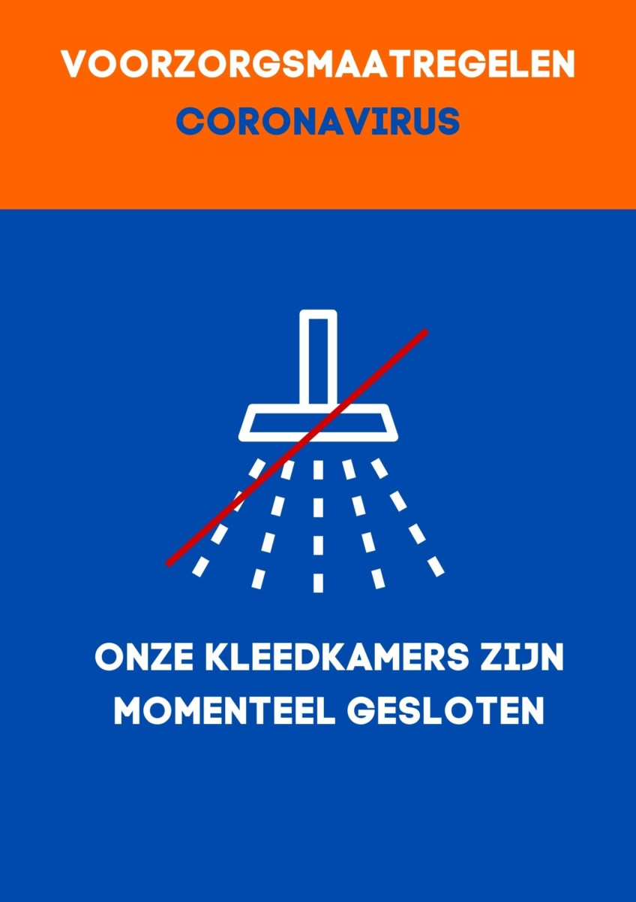
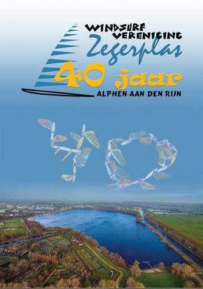

Fijne feestdagen en een gezond 2021
Door de RIVM-maatregelen vervalt dit jaar helaas het kerstgourmet. Ook de traditionele
nieuwjaarsreceptie op 1 januari 2021 gaat niet door. We hopen in 2021 snel de deuren weer te kunnen
openen.
We wensen iedereen hele fijne feestdagen, blijf gezond en tot ziens in het nieuwe jaar!
Clubhuis gesloten
In verband met Corona zijn de kantine en de kleedkamers incl. douches dicht. Ga je bij de surfclub op
eigen
gelegenheid windsurfen of suppen zorg er dan voor onderling 1,5 meter afstand te houden.
We hopen in 2021 snel de deuren weer te kunnen
openen.

Clubblad nummer 4-2020
Het vierde clubblad van het jaar is uit. Voor wie er voor heeft gekozen hem niet op papier te onvangen,
is hij uiteraard ook online te lezen. Blijf op de hoogte van al het nieuws op en rond de
vereniging. Klik op onderstaande afbeelding om het clubblad te lezen. Deadline clubblad nummer 5: 1
december 2020.
